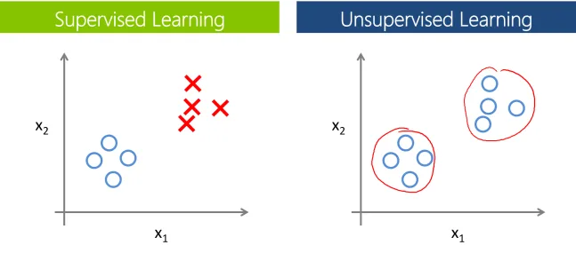
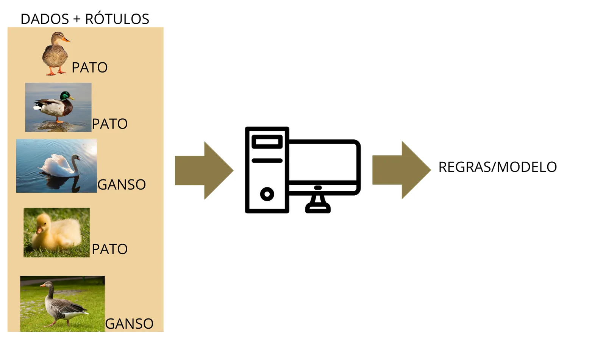
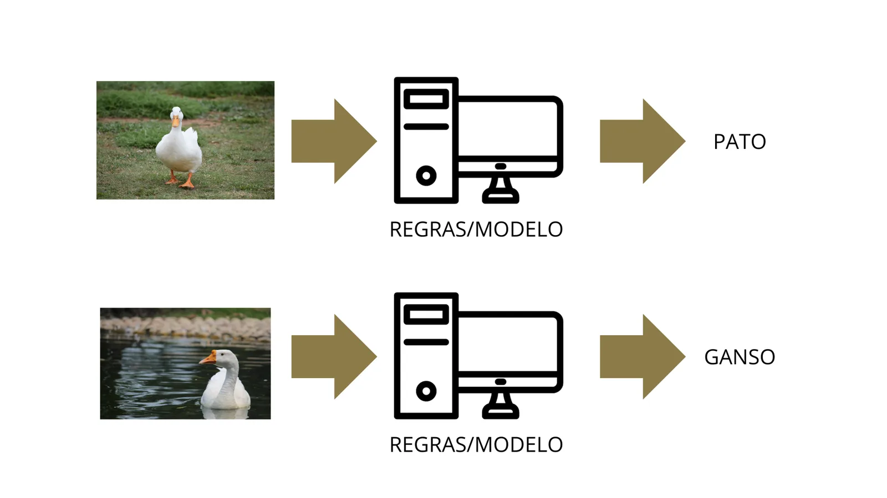
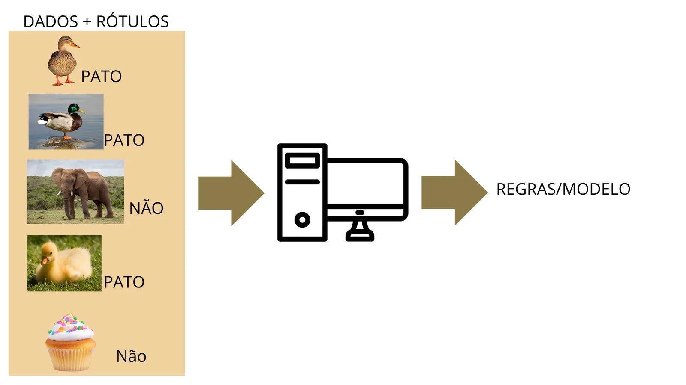
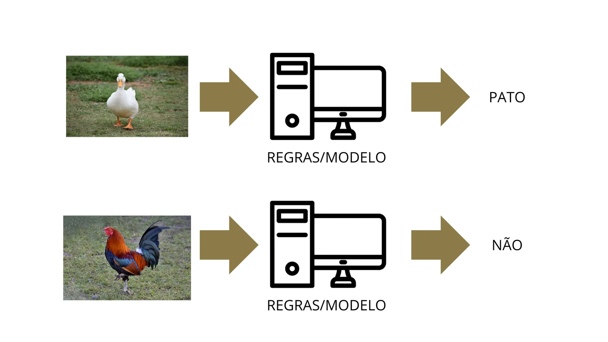
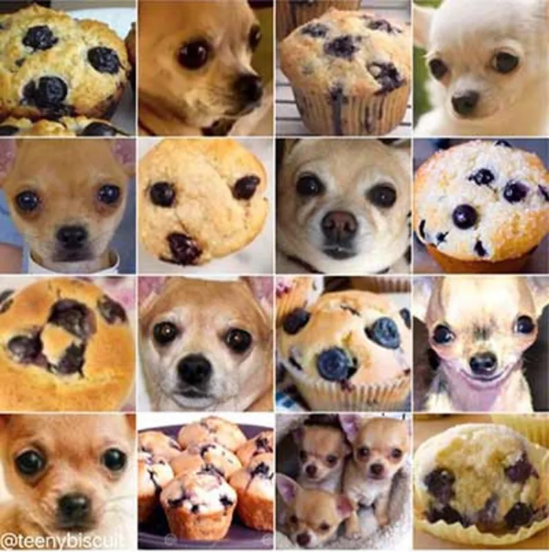
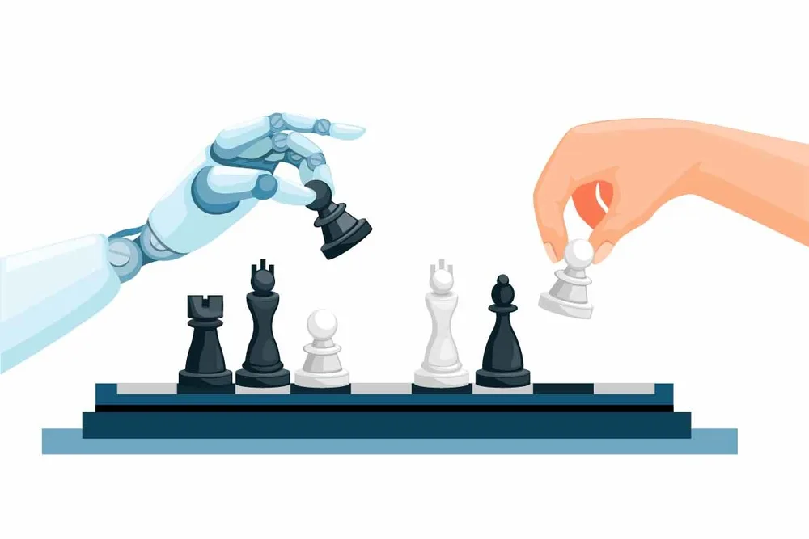
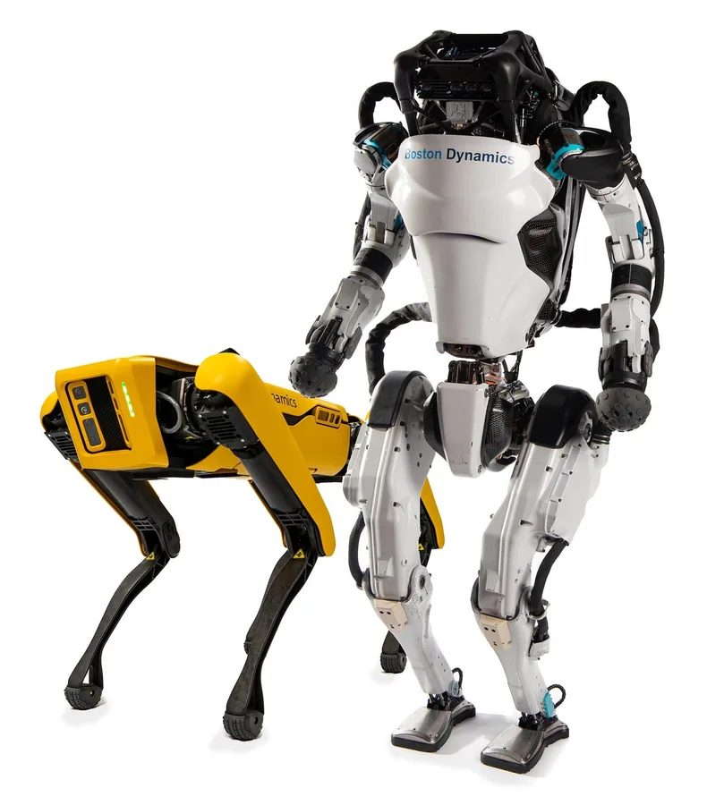
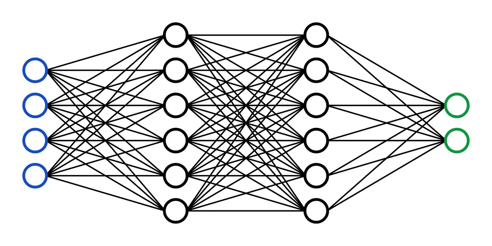

Tópico 04 · PRCCOMP · Física Computacional
Introdução ao aprendizado de máquina
Da definição de inteligência artificial ao perceptron treinado passo a passo.
Prof. Gustavo Voltani von Atzingen · IFSP Câmpus Piracicaba
Use ← e → (ou toque nas laterais) para navegar · F tela cheia
Roteiro de hoje
- O que é inteligência artificial? Definições e um pouco de história.
- IA, aprendizado de máquina, redes neurais e deep learning: quem contém quem.
- Como uma máquina aprende a partir de dados, e os três tipos de aprendizado.
- O neurônio artificial e o perceptron.
- Treinamento passada por passada: propagar, medir o erro, corrigir os pesos.
- O limite do XOR e o caminho até as redes profundas.
Para começar
O Deep Blue era inteligente?
Em 1997, o computador Deep Blue, da IBM, venceu o campeão mundial de xadrez Garry Kasparov em uma partida oficial.
Ele não aprendia com dados: avaliava cerca de 200 milhões de posições por segundo com busca em árvore, regras escritas por especialistas e hardware dedicado.
Kasparov é inteligente. E o Deep Blue?
“Eu podia sentir — podia cheirar — um novo tipo de inteligência do outro lado da mesa.”
“Dizer que o Deep Blue não pensa de verdade quando joga xadrez é como dizer que um avião não voa de verdade porque não bate as asas.”
O que é IA?
Quatro maneiras de definir inteligência artificial
“O novo e interessante esforço para fazer os computadores pensarem (…) máquinas com mentes.”
Haugeland, 1985“Automatização de atividades que associamos ao pensamento humano: tomar decisões, resolver problemas, aprender.”
Bellman, 1978“O estudo das faculdades mentais pelo uso de modelos computacionais.”
Charniak e McDermott, 1985“O estudo das computações que tornam possível perceber, raciocinar e agir.”
Winston, 1992“A arte de criar máquinas que executam funções que exigem inteligência quando executadas por pessoas.”
Kurzweil, 1990“O estudo de como fazer computadores realizarem tarefas que hoje as pessoas fazem melhor.”
Rich e Knight, 1991“Inteligência computacional é o estudo do projeto de agentes inteligentes.”
Poole et al., 1998Organização de Russell e Norvig, Inteligência Artificial, 3ª ed. A definição é pelo objetivo, não pela técnica.
Quatro termos que não são sinônimos
IA ⊃ aprendizado de máquina ⊃ redes neurais ⊃ deep learning
- Inteligência artificial
- Máquinas fazendo tarefas que, feitas por pessoas, chamaríamos de inteligentes. Inclui sistemas sem aprendizado: regras “se-então”, busca A*, o Deep Blue.
- Aprendizado de máquina
- As regras não são escritas: são ajustadas a partir de dados. Regressão, árvores de decisão, KNN…
- Redes neurais
- Modelos feitos de neurônios artificiais ligados por pesos. O perceptron é o mais simples.
- Deep learning
- Redes com muitas camadas, treinadas com muitos dados e GPUs: CNNs para imagens, transformers para texto.
Um pouco de história
De 1943 a hoje: avanços, promessas e dois invernos
- McCulloch e Pitts propõem o neurônio artificial lógico.
- Turing troca “máquinas podem pensar?” pelo jogo da imitação.
- A conferência de Dartmouth batiza o campo: artificial intelligence.
- Rosenblatt apresenta o perceptron, o primeiro neurônio que aprende.
- Minsky e Papert: um perceptron sozinho não resolve o XOR.
- Primeiro inverno da IA: cortes de financiamento.
- Rumelhart, Hinton e Williams popularizam o backpropagation.
- Segundo inverno da IA.
- Deep Blue vence Kasparov — com busca, quase sem aprendizado.
- AlexNet vence o ImageNet: dados + GPUs + redes profundas.
- O transformer (“Attention is all you need”).
- ChatGPT leva os modelos de linguagem ao público.
- Nobel de Física para Hopfield e Hinton.
Os marcos em destaque aparecem de novo nesta aula.
Por que isso é assunto de Física?
Nobel de Física 2024: redes neurais nascidas de ferramentas da física
John Hopfield
Criou uma memória associativa que guarda e reconstrói padrões. A rede é descrita como um sistema de spins com uma energia: lembrar um padrão é descer até um mínimo dessa energia.
Geoffrey Hinton
A partir da rede de Hopfield, criou a máquina de Boltzmann, que usa física estatística (a distribuição de Boltzmann) para aprender sozinha as propriedades dos dados.
“Os dois laureados deste ano usaram ferramentas da física para desenvolver métodos que são a base do poderoso aprendizado de máquina de hoje.”
Como se aprende
Três maneiras de entender e agir no mundo
Método científico
ObservaçõesModeloValidação
Nosso cérebro
ObservaçõesExperimentaçãoAprendizado
Aprendizado de máquina
DadosTreinamentoInferência
A virada de paradigma
Sistemas podem aprender com dados
Programação tradicional
Quem programa escreve as regras. Ex.: “se a temperatura passar de 30 °C, ligue o ventilador”.
Aprendizado supervisionado
Damos exemplos com a resposta certa e o algoritmo encontra as regras — o modelo —, que depois respondem a casos novos.
Tipos de aprendizado de máquina
Supervisionado, não supervisionado e por reforço
Supervisionado
Aprende com pares entrada → saída correta: encontra a função que liga uma à outra.
Reconhecer imagens, diagnósticos, prever preços, classificar spam.
Não supervisionado
Só há as entradas, sem rótulos: o algoritmo procura estrutura e agrupamentos.
Clusterização, sistemas de recomendação, detecção de anomalias.
Por reforço
Um agente age, recebe recompensas ou punições e aprende a decidir, continuamente.
Robôs que andam, jogos (AlphaGo), controle em tempo real.

Exemplo · aprendizado supervisionado
Treino: dados + rótulos

Exemplo · aprendizado supervisionado
Inferência: o modelo responde para fotos que nunca viu

Exemplo · aprendizado supervisionado
Outro treino: “é pato” ou “não é”

Exemplo · aprendizado supervisionado
O modelo só sabe responder o que aprendeu a perguntar

As classes possíveis e os exemplos escolhidos definem o que o modelo é capaz de dizer.
Cuidado com os dados
Dados de treinamento × dados do mundo real
No treino, os exemplos costumam ser limpos e bem diferentes entre si:
No mundo real, aparecem casos parecidos, ruidosos e ambíguos. O modelo precisa generalizar, não decorar.

Deep learning e as fronteiras
O paradoxo de Moravec
O raciocínio formal exige pouca computação; perceber, mover-se e usar linguagem exigem uma quantidade enorme.


Redes neurais
Do neurônio biológico ao neurônio artificial
O neurônio recebe sinais pelos dendritos; se o estímulo total passa de um limiar, ele dispara pelo axônio. A força de cada sinapse muda com o aprendizado.
O modelo de McCulloch e Pitts (1943) copia essa ideia:
- cada entrada \(x_i\) é multiplicada por um peso \(w_i\);
- os produtos são somados ao bias \(b\);
- a função de ativação \(\varphi\) decide a saída.
O neurônio artificial
Função de ativação e o papel do bias
O perceptron
Com duas entradas, o perceptron é uma reta
A saída troca de 0 para 1 onde \(v=0\):
Isso é a equação de uma reta no plano \((x_1,x_2)\). De um lado o neurônio responde 1; do outro, 0. Aprender é mover essa reta mudando \(w_1\), \(w_2\) e \(b\).
Primeiro problema: a porta lógica AND, que só vale 1 quando as duas entradas valem 1.
| \(x_1\) | \(x_2\) | \(d\) (desejado) |
|---|---|---|
| 0 | 0 | 0 |
| 0 | 1 | 0 |
| 1 | 0 | 0 |
| 1 | 1 | 1 |
Aprendizado por correção de erro
Uma passada: propagar, medir o erro, corrigir
1 Propagação
A amostra atravessa o neurônio:
2 Erro
Compara a saída com a resposta desejada \(d\):
3 Correção
Cada peso anda na direção que reduz o erro, com taxa de aprendizado \(\eta\):
Antes do computador
AND, primeira época, à mão
Pesos iniciais \(w_1=-0{,}5\), \(w_2=0{,}5\), \(b=-0{,}25\) e taxa \(\eta=0{,}25\). Ativação degrau.
| \(x_1,x_2\) | \(d\) | \(v=w_1x_1+w_2x_2+b\) | \(y\) | \(e=d-y\) | \(w_1\) | \(w_2\) | \(b\) |
|---|---|---|---|---|---|---|---|
| 0, 0 | 0 | \(-0{,}25\) | 0 | 0 | −0,50 | 0,50 | −0,25 |
| 0, 1 | 0 | \(0{,}5-0{,}25=0{,}25\) | 1 | −1 | −0,50 | 0,25 | −0,50 |
| 1, 0 | 0 | \(-0{,}5-0{,}5=-1\) | 0 | 0 | −0,50 | 0,25 | −0,50 |
| 1, 1 | 1 | \(-0{,}5+0{,}25-0{,}5=-0{,}75\) | 0 | 1 | −0,25 | 0,50 | −0,25 |
As colunas \(w_1\), \(w_2\) e \(b\) mostram os valores depois da correção. Na linha 2: \(w_2\leftarrow 0{,}5+0{,}25\cdot(-1)\cdot 1=0{,}25\) e \(b\leftarrow-0{,}25+0{,}25\cdot(-1)=-0{,}5\).
Duas amostras certas e duas corrigidas. O treino repete as épocas até uma época inteira passar sem erro: isso acontece na 5ª. Continue no próximo slide.
Perceptron interativo: treine passada por passada
desejado 1desejado 0classificado erradoreta anterior
Amostras erradas por época
O limite de um neurônio só
XOR: nenhuma reta separa as classes
No XOR, \((0,1)\) e \((1,0)\) valem 1, mas \((0,0)\) e \((1,1)\) valem 0. Experimente no explorador: o perceptron nunca converge. Foi esse resultado de Minsky e Papert (1969) que esfriou a área.
A saída é empilhar neurônios em camadas: a camada escondida dobra o plano e a de saída combina as retas. Para corrigir os pesos internos, o erro é propagado de trás para frente pela regra da cadeia — o backpropagation (1986).
Redes assim reconhecem os dígitos do MNIST — continue no Tópico 2, capítulo 3.

Agora em Python
O mesmo treino em 20 linhas, sem bibliotecas
for epoca in range(1, MAXIMO_EPOCAS + 1):
erros = 0
for (x1, x2), d in AMOSTRAS:
# 1. Propagação
v = w1 * x1 + w2 * x2 + b
y = 1 if v >= 0 else 0
# 2. Erro
e = d - y
# 3. Correção
w1 = w1 + TAXA * e * x1
w2 = w2 + TAXA * e * x2
b = b + TAXA * e
if e != 0:
erros += 1
if erros == 0:
breakRode com python perceptron.py: o programa imprime cada passada e para na 5ª época, com a reta \(0{,}25x_1+0{,}25x_2-0{,}5=0\).
Desafios:
- Troque as amostras para a porta OR e para o XOR. O que acontece?
- Mude a taxa \(\eta\) e os pesos iniciais. O número de épocas muda? A reta final é sempre a mesma?
- Troque o degrau pela sigmoide e use \(\delta=e\,y(1-y)\).
Para levar
- IA é definida pelo objetivo; aprendizado de máquina é o caminho em que as regras são ajustadas a partir de dados.
- IA ⊃ aprendizado de máquina ⊃ redes neurais ⊃ deep learning.
- Supervisionado (com rótulos), não supervisionado (estrutura) e por reforço (recompensa).
- Um neurônio faz uma soma ponderada e uma ativação; com duas entradas, decide por uma reta.
- Treinar é repetir passadas: propagar → medir o erro → corrigir os pesos com \(\eta\).
- Um perceptron não resolve o XOR; camadas e backpropagation resolvem.
Referências
- RUSSELL, S.; NORVIG, P. Inteligência artificial. 3. ed. Rio de Janeiro: Elsevier, 2013.
- HAYKIN, S. Redes neurais: princípios e prática. 2. ed. Porto Alegre: Bookman, 2001.
- ROSENBLATT, F. The perceptron: a probabilistic model for information storage and organization in the brain. Psychological Review, v. 65, n. 6, 1958.
- MINSKY, M.; PAPERT, S. Perceptrons. Cambridge: MIT Press, 1969.
- RUMELHART, D.; HINTON, G.; WILLIAMS, R. Learning representations by back-propagating errors. Nature, v. 323, 1986.
- THE ROYAL SWEDISH ACADEMY OF SCIENCES. Press release: The Nobel Prize in Physics 2024.
- 3BLUE1BROWN. Neural networks — série em vídeo sobre redes e backpropagation.
- Material do curso FIC Introdução à Inteligência Artificial para tomada de decisões (IFSP Piracicaba), de onde vêm as figuras dos exemplos.